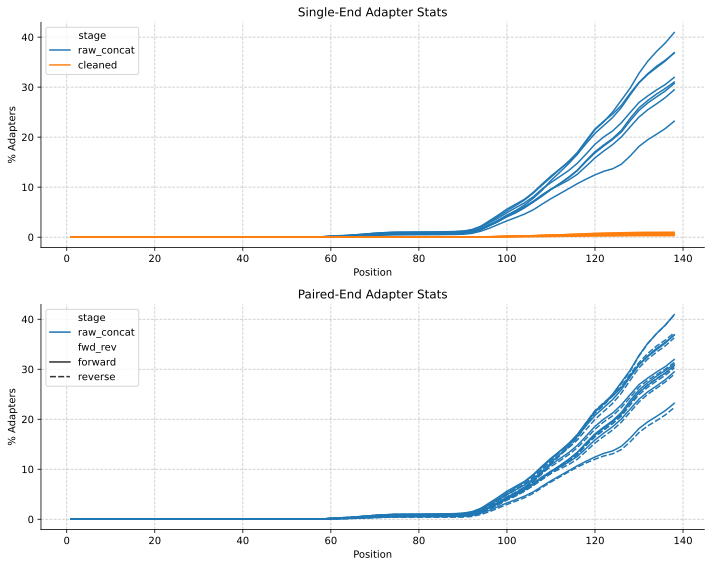

I’m adapting mgs-workflow to take in single-read sequencing data. Here I’m checking if: (i) the output of the single-read RAW and CLEAN workflows look as expected, and (ii) if the output of the paired-end version is the same as the output of the test run on dev.
The dataset used here was generated from Project Runway samples, with library prep performed at the BMC followed by Element AVITI sequencing. Will previously analyzed this data here. Notably, the reverse reads of the paired-end run were low quality, at the same time as our MultiQC analyses not providing separate quality statitics for the forward and reverse reads. As such, the plots of the paired-end data show artefacts due to an iniability to distinguish between forward and reverse reads. I created a Github issue for this.
I find that the single-read QC output of the RAW and CLEAN workflows looks as expected, i.e., similar to those of the forward reads in the paired-end run. Differences in the two datasets are mostly mediated by the reverse reads of the paired-end run being low quality, leading to fewer reads and base pairs passing through FASTP, and thus affecting the paired-end QC measures.
I will amend the PROFILE subworkflow of mgs-workflow next.
Introduction
The single-end dataset simply consists of the forward reads of our usual test dataset. Additionally, I work with the paired-end test dataset, run on the single-read-raw pipeline, and the same dataset run with the master branch of mgs-workflow.
I compared the qc output of the two paired-end runs, and they are identical, suggesting that the addition of single-read functionality doesn’t impede mgs-workflow runs on paired-end data.
Comparing the basic stats of the single-read version to the paired-end version, the most notable difference is paired-end data losing more bases and reads through FASTP cleaning. Accounting for paired-end reads containing twice as many base pairs, cleaned paired-end read files contain 16.4% fewer bases than cleaned single-end read files. This is largely due to FASTP dropping low-quality read pairs, with the number of cleaned paired-end reads 18.5% lower than the number of cleaned single-end reads. See Table 2.1 and Table 2.2 for per-sample statistics.
My current hypothesis for this pattern is that the reverse reads are very low quality, as seen in Figure 4.1, leading FASTP to drop many of the read pairs with a low-quality reverse read. I won’t investigate this further for now, but it suggests we should use a new test dataset that has high-quality forward and reverse reads. Harmon is working on this, which is great.
Table 2.2: Comparison of the number of reads between single-read and paired-end runs, for both raw and cleaned files
Comparing adapter contamination stats
Comparing adapter contamination (Figure 3.1) between single-read and paired-end runs, the raw_concat and cleaned adapter contaminations show similar trends.
Code
fig, axs = plt.subplots(2, 1, dpi=300, figsize=(10, 8))sns.lineplot(data=se_adapter_stats, x='position', y='pc_adapters', hue='stage', ax=axs[0],units="sample", estimator=None, legend=True)sns.lineplot(data=pe_adapter_stats, x='position', y='pc_adapters', hue='stage', ax=axs[1],units="sample", estimator=None, legend=True)# Set common properties for both subplotsfor ax in axs: ax.set_xlabel('Position') ax.set_ylabel('% Adapters') ax.grid(True, linestyle='--', alpha=0.7)# Set titles for each subplotaxs[0].set_title('Single-End Adapter Stats')axs[1].set_title('Paired-End Adapter Stats')# Remove top and right spines for both subplotsfor ax in axs: ax.spines['top'].set_visible(False) ax.spines['right'].set_visible(False)fig.tight_layout()

Figure 3.1: Adapter contamination along reads
Comparing base quality stats
This plot has become less meaningful with the inability to distinguish between forward and reverse reads. I might rerun this plot once we have a new, better test dataset.
Plotting the mean phred score (Figure 5.1) again a comparison is hard due to the inability to distinguish between forward and reverse reads in the paired-end data. Nevertheless, in aggregate the single-read data has higher quality scores, which is expected given that the foward reads of the test dataset, whcih make up the single-read data, have higher quality scores than the reverse reads.
---title: "Testing the single-read version of mgs-workflow's RAW and CLEAN subworkflows"author: "Simon Grimm"date: 2024-10-23format: html: code-fold: true code-tools: true code-link: true df-print: paged toc: true toc-depth: 2 cap-location: bottom fig-format: svg crossref: fig-title: Figure fig-prefix: Figure chapters: truejupyter: venvtitle-block-banner: "#5cb2a0"---I'm adapting mgs-workflow to take in single-read sequencing data. Here I'm checking if: (i) the output of the single-read RAW and CLEAN workflows look as expected, and (ii) if the output of the paired-end version is the same as the output of the test run on `dev`.The dataset used here was generated from Project Runway samples, with library prep performed at the BMC followed by Element AVITI sequencing. Will previously analyzed this data [here](https://data.securebio.org/wills-public-notebook/notebooks/2023-12-19_project-runway-bmc-rna.html). Notably, the reverse reads of the paired-end run were low quality, at the same time as our MultiQC analyses not providing separate quality statitics for the forward and reverse reads. As such, the plots of the paired-end data show artefacts due to an iniability to distinguish between forward and reverse reads. I created a Github issue for this.I find that the single-read QC output of the RAW and CLEAN workflows looks as expected, i.e., similar to those of the forward reads in the paired-end run. Differences in the two datasets are mostly mediated by the reverse reads of the paired-end run being low quality, leading to fewer reads and base pairs passing through FASTP, and thus affecting the paired-end QC measures.I will amend the PROFILE subworkflow of mgs-workflow next.# IntroductionThe single-end dataset simply consists of the forward reads of our usual test dataset. Additionally, I work with the paired-end test dataset, run on the `single-read-raw` pipeline, and the same dataset run with the `master` branch of `mgs-workflow`.I compared the `qc` output of the two paired-end runs, and they are identical, suggesting that the addition of single-read functionality doesn't impede mgs-workflow runs on paired-end data.```{python}#| label: load-packages#| include: falseimport osimport pandas as pdimport matplotlib.pyplot as pltimport seaborn as sns``````{python}#| label: data-pathssingle_read_dir ="mgs-results/test_single_read"paired_read_dir ="mgs-results/test_paired_end"test_dir ="mgs-results/test"se_output_dir = os.path.join(single_read_dir, "output")pe_output_dir = os.path.join(paired_read_dir, "output")test_output_dir = os.path.join(test_dir, "output")se_results_dir = os.path.join(se_output_dir, "results")pe_results_dir = os.path.join(pe_output_dir, "results")test_results_dir = os.path.join(test_output_dir, "results")se_basic_stats_path = os.path.join(se_results_dir, "qc_basic_stats.tsv.gz")se_adapter_stats_path = os.path.join(se_results_dir, "qc_adapter_stats.tsv.gz")se_quality_base_stats_path = os.path.join(se_results_dir, "qc_quality_base_stats.tsv.gz")se_quality_seq_stats_path = os.path.join(se_results_dir, "qc_quality_sequence_stats.tsv.gz")pe_basic_stats_path = os.path.join(pe_results_dir, "qc_basic_stats.tsv.gz")pe_adapter_stats_path = os.path.join(pe_results_dir, "qc_adapter_stats.tsv.gz")pe_quality_base_stats_path = os.path.join(pe_results_dir, "qc_quality_base_stats.tsv.gz")pe_quality_seq_stats_path = os.path.join(pe_results_dir, "qc_quality_sequence_stats.tsv.gz")test_basic_stats_path = os.path.join(test_results_dir, "qc_basic_stats.tsv.gz")test_adapter_stats_path = os.path.join(test_results_dir, "qc_adapter_stats.tsv.gz")test_quality_base_stats_path = os.path.join(test_results_dir, "qc_quality_base_stats.tsv.gz")test_quality_seq_stats_path = os.path.join(test_results_dir, "qc_quality_sequence_stats.tsv.gz")```# Assessing basic stats for both raw and cleaned reads```{python}#| label: load-basic-statsse_basic_stats = pd.read_csv(se_basic_stats_path, sep='\t')pe_basic_stats = pd.read_csv(pe_basic_stats_path, sep='\t')test_basic_stats = pd.read_csv(test_basic_stats_path, sep='\t')``````{python}#| label: check-equivalence-of-paired-read-data#| echo: false#| include: falsepe_basic_stats = pe_basic_stats.sort_values(by='sample').reset_index(drop=True)test_basic_stats = test_basic_stats.sort_values(by='sample').reset_index(drop=True)pe_basic_stats.equals(test_basic_stats)```Comparing the basic stats of the single-read version to the paired-end version, the most notable difference is paired-end data losing more bases and reads through FASTP cleaning. Accounting for paired-end reads containing twice as many base pairs, cleaned paired-end read files contain 16.4% fewer bases than cleaned single-end read files. This is largely due to FASTP dropping low-quality read pairs, with the number of cleaned paired-end reads 18.5% lower than the number of cleaned single-end reads. See @tbl-compare-base-pairs and @tbl-compare-read-pairs for per-sample statistics.My current hypothesis for this pattern is that the reverse reads are very low quality, as seen in @fig-quality-base-stats-comparison, leading FASTP to drop many of the read pairs with a low-quality reverse read. I won't investigate this further for now, but it suggests we should use a new test dataset that has high-quality forward and reverse reads. Harmon is working on this, which is great.```{python}#| label: tbl-compare-base-pairs#| tbl-cap: Comparison of the number of bases between single-read and paired-end runs, for both raw and cleaned filescombined_df = se_basic_stats[["sample", "n_bases_approx", "stage", "n_read_pairs"]].merge( pe_basic_stats[["sample", "n_bases_approx", "stage", "n_read_pairs"]], on=["sample", "stage"], suffixes=["_single", "_paired"])combined_df["ratio_bases"] =round((combined_df["n_bases_approx_paired"] / combined_df["n_bases_approx_single"]) , 2)combined_df["ratio_read_pairs"] =round(combined_df["n_read_pairs_paired"] / combined_df["n_read_pairs_single"], 2)# Order columnscombined_df_base_pairs = combined_df[["sample", "stage", "n_bases_approx_single", "n_bases_approx_paired", "ratio_bases"]]# Display the resultcombined_df_base_pairs.set_index(["sample"])``````{python}#| label: calculate-ratio-base-read-loss#| include: false#| echo: falsecombined_df["ratio_bases"] =round((combined_df["n_bases_approx_paired"] / combined_df["n_bases_approx_single"]) , 2)combined_df["ratio_read_pairs"] =round(combined_df["n_read_pairs_paired"] / combined_df["n_read_pairs_single"], 2)``````{python}#| label: tbl-compare-read-pairs#| tbl-cap: Comparison of the number of reads between single-read and paired-end runs, for both raw and cleaned filescombined_df_read_pairs = combined_df[["sample", "stage", "n_read_pairs_single", "n_read_pairs_paired", "ratio_read_pairs"]]combined_df_read_pairs.set_index(["sample"])```# Comparing adapter contamination stats```{python}#| label: load-adapter-stats#| echo: falsetest_adapter_stats = pd.read_csv(test_adapter_stats_path, sep='\t')se_adapter_stats = pd.read_csv(se_adapter_stats_path, sep='\t')pe_adapter_stats = pd.read_csv(pe_adapter_stats_path, sep='\t')``````{python}#| label: check-equivalence-of-adapter-stats#| echo: false#| include: false# Sort both dataframes by the same columns in the same orderpe_adapter_stats = pe_adapter_stats.sort_values(by=['file', 'position', 'pc_adapters']).reset_index(drop=True)test_adapter_stats = test_adapter_stats.sort_values(by=['file', 'position', 'pc_adapters']).reset_index(drop=True)# print(pe_adapter_stats == test_adapter_stats)pe_adapter_stats.equals(test_adapter_stats)```Comparing adapter contamination (@fig-adapter-stats-comparison) between single-read and paired-end runs, the raw_concat and cleaned adapter contaminations show similar trends.```{python}#| label: fig-adapter-stats-comparison#| fig-cap: Adapter contamination along readsfig, axs = plt.subplots(2, 1, dpi=300, figsize=(10, 8))sns.lineplot(data=se_adapter_stats, x='position', y='pc_adapters', hue='stage', ax=axs[0],units="sample", estimator=None, legend=True)sns.lineplot(data=pe_adapter_stats, x='position', y='pc_adapters', hue='stage', ax=axs[1],units="sample", estimator=None, legend=True)# Set common properties for both subplotsfor ax in axs: ax.set_xlabel('Position') ax.set_ylabel('% Adapters') ax.grid(True, linestyle='--', alpha=0.7)# Set titles for each subplotaxs[0].set_title('Single-End Adapter Stats')axs[1].set_title('Paired-End Adapter Stats')# Remove top and right spines for both subplotsfor ax in axs: ax.spines['top'].set_visible(False) ax.spines['right'].set_visible(False)fig.tight_layout()```# Comparing base quality stats```{python}#| label: load-quality-base-stats#| echo: false#|test_quality_base_stats = pd.read_csv(test_quality_base_stats_path, sep='\t')se_quality_base_stats = pd.read_csv(se_quality_base_stats_path, sep='\t')pe_quality_base_stats = pd.read_csv(pe_quality_base_stats_path, sep='\t')``````{python}#| label: equivalence-of-quality-base-stats#| echo: false#| include: falsepe_quality_base_stats = pe_quality_base_stats.sort_values(by=['file', 'position', 'mean_phred_score']).reset_index(drop=True)test_quality_base_stats = test_quality_base_stats.sort_values(by=['file', 'position', 'mean_phred_score']).reset_index(drop=True)pe_quality_base_stats.equals(test_quality_base_stats)```This plot has become less meaningful with the inability to distinguish between forward and reverse reads. I might rerun this plot once we have a new, better test dataset.```{python}#| label: fig-quality-base-stats-comparison#| fig-cap: Phred scores along the read#|fig, axs = plt.subplots(2, 1, dpi=300, figsize=(10, 8))sns.lineplot(data=se_quality_base_stats, x='position', y='mean_phred_score', hue='stage', units="sample", ax=axs[0],estimator=None, legend=True)sns.lineplot(data=pe_quality_base_stats, x='position', y='mean_phred_score', hue='stage', units="sample", ax=axs[1],estimator=None, legend=True)axs[0].set_title('Mean phred scores across single-end reads')axs[1].set_title('Mean phred scores across paired-end reads')for ax in axs: ax.spines['top'].set_visible(False) ax.spines['right'].set_visible(False)plt.subplots_adjust(hspace=0.3)```# Comparing sequence quality stats```{python}#| label: load-quality-sequence-stats#| echo: falsetest_quality_seq_stats = pd.read_csv(test_quality_seq_stats_path, sep='\t')se_quality_seq_stats = pd.read_csv(se_quality_seq_stats_path, sep='\t')pe_quality_seq_stats = pd.read_csv(pe_quality_seq_stats_path, sep='\t')``````{python}#| label: equivalence-of-quality-sequence-stats#| echo: false#| include: falsepe_quality_seq_stats = pe_quality_seq_stats.sort_values(by=['file', 'mean_phred_score']).reset_index(drop=True)test_quality_seq_stats = test_quality_seq_stats.sort_values(by=['file', 'mean_phred_score']).reset_index(drop=True)pe_quality_seq_stats.equals(test_quality_seq_stats)```Plotting the mean phred score (@fig-quality-sequence-stats-comparison) again a comparison is hard due to the inability to distinguish between forward and reverse reads in the paired-end data. Nevertheless, in aggregate the single-read data has higher quality scores, which is expected given that the foward reads of the test dataset, whcih make up the single-read data, have higher quality scores than the reverse reads.```{python}#| label: fig-quality-sequence-stats-comparison#| fig-cap: Average Phred scores of sequencesfig, axs = plt.subplots(2, 1, dpi=300, figsize=(10, 8))sns.lineplot(data=se_quality_seq_stats, x='mean_phred_score', y='n_sequences', hue='stage', ax=axs[0],units="sample", estimator=None, legend=True)plt.subplots_adjust(hspace=0.3)sns.lineplot(data=pe_quality_seq_stats, x='mean_phred_score', y='n_sequences', hue='stage', ax=axs[1], units="sample", estimator=None, legend=True)axs[0].set_title('Mean phred scores of single-end reads')axs[1].set_title('Mean phred scores of paired-end reads')for ax in axs: ax.spines['top'].set_visible(False) ax.spines['right'].set_visible(False) ax.set_xlim(0, 40) ax.set_ylim(0, 500)```